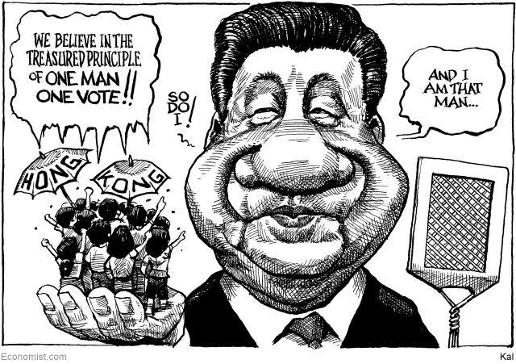
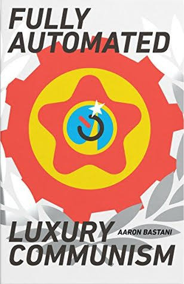

Comments and discussion at our Facebook Page

Starting the Real Human Journey
A five-minute introduction to Marx's Communism.
A Marxist Response to the CEA’s Report “The Opportunity Cost of Socialism”

By setting out the full range of confusion on the subject of socialism, the report by the Council of Economic Advisers (CEA) has provided a good opportunity to both explain and defend the Marxist view on the matter.
TEST Test
When Marxists use the term socialism, they mean the revolutionary transition period when capitalism is transformed into communism. Attempts at this transition to date have been defeated by unfavorable conditions and balance of forces, particularly those arising from economic and social backwardness. These defeats have been achieved by means of socialist regimes losing their revolutionary nature and being “socialist” only because the people running the show continued to call themselves communists.
Key to the success of proletarian revolution is full capitalist development. This will eliminate the necessity of want and toil that historically has set all against all. When it comes to “economic calculation” there is nothing that capitalism can do that socialism cannot do better.
Much of the report is devoted to attacking "Medicare for All" as proposed by Bernie Sanders and other "socialists". A proletarian government would be in a better position to freely provide healthcare and other goods and services particularly as conditions become more communist. However, there is nothing about socialism that rules out extensive user pays.
Most of the CEA report is taken up with government intervention under capitalism. The report calls this socialism, as do a lot of people. However, this is not socialism by the reckoning of Marxists and its failure is not their concern.
Marx was No Green

However, the "ecological Marxist" John Bellamy Foster at Monthly Review seems to think he was.
Communist Manifesto Online

The best source is marxists.org. As well as the web version, they also have it in audio, Word, PDF, mobi and prc formats.
What is Communism?
Communism is a global, classless society based on social ownership of the means of production that we expect will supersede capitalism.
Such a superior society based on mutual regard rather than profit is made possible by capitalism itself. On the one hand, the high level of economic development achieved under capitalism means that communism would not be shared poverty and toil but rather its opposites - shared abundance and work done willingly, that fully develops the individual's creative powers. On the other hand, capitalism creates the agent of change, the proletariat. This is a class to which most people belong once capitalism is fully developed. It has no interest in the present system and is equipped by modern conditions to begin the struggle to transform society and itself.
Socialism and Communism
Communism will be preceded by a transition period that has usually been called socialism or the dictatorship of the proletariat. This period will begin with a revolution that takes the means of production from the capitalists. Then follows a protracted and tortuous period of class struggle with a new bourgeoisie that will inevitably emerge because it is not possible to immediately eliminate the old division of labor. For some time society will still have a lot of hierarchy, and all levels of government including the very top will be full of phonies pretending to be revolutionaries and also former revolutionaries who have been corrupted by power. In this struggle workers will have to learn to run their own society without masters and be guided by the morality of mutual regard. This struggle will encounter many mishaps and reversals but final victory is premised on the fact that communism is the answer to the problems and limitations of capitalism. To date the only experience we have is of transition failure, in countries where the conditions for success were completely absent.
Check out our YouTube Channel

or the Podcast Version
Some Forgotten Marxism

A 28 page booklet [PDF][WEB][epub][Kindle]
It is amazing how there are quite a few people who describe themselves as Marxist, and yet the primary political message of Marx has been buried and forgotten. This booklet will try to resurrect that message. It can be summed up quite simply in the following two points:
1. By developing the productive forces, transforming most people into proletarians rather than peasants and fracturing traditional culture, capitalism creates the necessary conditions for a more advanced classless society where we will all jointly own the means of production and the typical individual will thrive for the first time.
2. Given these conditions, it is then up to us to take advantage of this opportunity and make it happen by transforming ourselves and society.
This alerts us to the importance of capitalist development in those regions where economic and social backward- ness still prevail. It also helps us understand the experience of the "communist" countries. Because of their backwardness, conditions for communism were not present and those who redefined socialism to mean state ownership with them in charge met limited resistance.
Down with the "Communist" Tyrannies!
The “communist” tyrannies in China, North Korea, Vietnam and Cuba must be overthrown just like other tyrannies. However, they are of special interest to Marxists. Examining how these counter-revolutionary abominations emerged opens up scope for explaining the nature of the proletarian revolution and the challenges it faces.
A Model of a Socially Owned Economy that Relies on Decentralized Prices - a challenge to the “Austrians” on economic calculation

This paper sets out a model of social ownership based on decentralized pricing with the aim of challenging the view that the Austrian School economists won the socialist economic calculation debate.
'Fully Automated Luxury Communism': Communism's Coming of Age
A review of the Aaron Bastani book
It has to be a game changer when a book espousing communism is the talk of the town. It has done this by putting the discussion on a firm footing. Communism is luxury for all and the end of toil.